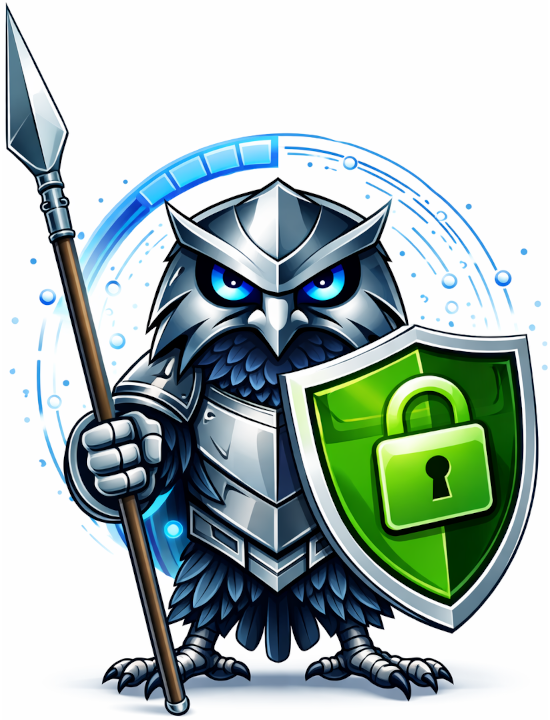

Ready to monitor your certificates?
TLSentinel is free, open source, and runs entirely on your own infrastructure.

Never miss a certificate expiration again. TLSentinel scans every server you give it — internal, private, or public — alerts you before anything expires, and grades the security of every endpoint. Runs on your own infrastructure.
Reach servers behind firewalls, on private networks, and in isolated environments. The scanner runs where you do.
Get warned before any certificate expires, with enough time to do something about it.
Each server gets a letter grade for its security configuration. Spot weak settings before they become incidents.
Sign in with Entra ID, Google, Okta, or any OIDC provider. Local accounts work too. Role-based access controls who can manage vs. who can only view.
Every certificate you've ever seen, with full history. Answer "what changed, when, and on which server" months later.
Everything in the dashboard is also available through the API. Add servers, query status, integrate with your tooling.
TLSentinel is designed to self-host with Docker Compose. No cloud account required.
TLSentinel is free, open source, and runs entirely on your own infrastructure.